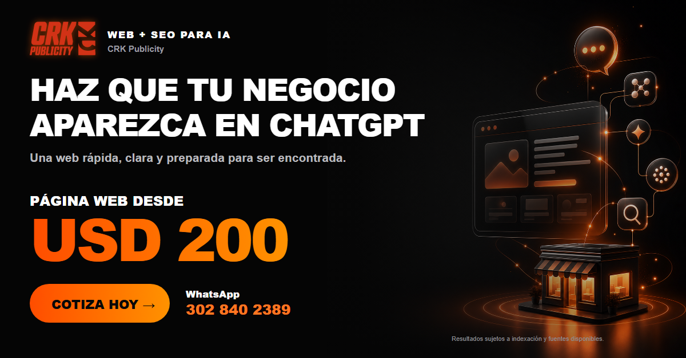

![CRK Publicity](data:image/svg+xml,%3c?xml%20version='1.0'%20encoding='UTF-8'?%3e%3csvg%20id='Capa_2'%20data-name='Capa%202'%20xmlns='http://www.w3.org/2000/svg'%20viewBox='0%200%20123.25%2062.79'%3e%3cdefs%3e%3cstyle%3e%20.cls-1%20{%20fill:%20%23d23017;%20}%20%3c/style%3e%3c/defs%3e%3cg%20id='Capa_1-2'%20data-name='Capa%201'%3e%3cg%3e%3cg%3e%3cpath%20class='cls-1'%20d='M91.26,62.79l-.11-23.05c2.14,15.59,20.01,17.89,31.72,11.2-.64,3.73,1.19,8.47-.11,11.85,0,0-31.51,0-31.51,0Z'/%3e%3cpath%20class='cls-1'%20d='M122.66,0c-.02.38-.02,4.9.14,5.05-4.51,4.58-9.12,9.3-13.85,13.61l-17.9-12.41V.33c.14-.21.79-.33.99-.33h30.63Z'/%3e%3cpath%20class='cls-1'%20d='M122.88,35.35v10.32c-4.19-.72-4.75-5.12-8.24-.23-7.06,6.12-18.78-.91-16.13-10.09h24.37Z'/%3e%3cpath%20class='cls-1'%20d='M91.04,16.25l16.91,12.07-16.15.23c-.22.05-.76-.16-.76-.34v-11.97Z'/%3e%3cpath%20class='cls-1'%20d='M122.88,15.81v12.62c0,.5-2.77.39-3.28.21l-5.71-4.38,9-8.45Z'/%3e%3c/g%3e%3cg%3e%3cpath%20class='cls-1'%20d='M26.83,36.24c-.79,4.59-2.54,6.28-5.98,7.25H6.71c-2.48-.97-4.17-3.26-3.44-7.25L8.41,7.25C9.19,2.66,10.94.97,14.38,0h14.13c2.48.97,4.11,3.26,3.44,7.25l-1.87,10.51h-9.66l1.69-9.6-.48-.6h-3.02l-.72.6-4.77,27.18.48.6h3.02l.72-.6,1.63-9.48h9.66l-1.81,10.39Z'/%3e%3cpath%20class='cls-1'%20d='M28.58,43.49L36.25,0h18.84c2.48.97,4.11,3.26,3.44,7.25l-1.63,9.24c-.79,4.41-2.48,6.16-5.62,7.13l3.08,14.31-1.09,5.56h-7.73l-3.08-16.91h-1.27l-2.96,16.91h-9.66ZM44.58,7.55l-2.05,11.48h3.62l.72-.6,1.81-10.27-.48-.6h-3.62Z'/%3e%3cpath%20class='cls-1'%20d='M67.9,26.09l-3.08,17.39h-9.66L62.82,0h9.66l-3.08,17.33h1.15L78.77,0h8.76l-.91,6.52-8.21,15.4,2.6,15.04-1.15,6.52h-8.4l-2.11-17.39h-1.45Z'/%3e%3c/g%3e%3cg%3e%3cpath%20class='cls-1'%20d='M4.67,57.07l-1.01,5.72H0l2.9-16.47h7.14c.94.37,1.56,1.23,1.3,2.74l-.94,5.26c-.3,1.74-.96,2.38-2.26,2.74h-3.48ZM6.06,49.18l-.89,5.03h1.37l.27-.23.8-4.57-.18-.23h-1.37Z'/%3e%3cpath%20class='cls-1'%20d='M14.04,59.7l.18.23h.91l.27-.23,2.36-13.38h3.66l-2.42,13.72c-.3,1.74-.96,2.38-2.26,2.74h-5.12c-.94-.37-1.58-1.21-1.3-2.74l2.42-13.72h3.66l-2.36,13.38Z'/%3e%3cpath%20class='cls-1'%20d='M19.67,62.79l2.9-16.47h7.14c.94.37,1.56,1.23,1.3,2.74l-.43,2.45c-.23,1.33-.66,2.29-2.26,2.77,1.23.5,1.49,1.6,1.3,2.72l-.55,3.04c-.3,1.74-.96,2.38-2.26,2.74h-7.14ZM25.44,59.93l.69-3.84-.21-.23h-1.37l-.75,4.3h1.37l.27-.23ZM25.02,53.23h1.37l.25-.23.69-3.82-.18-.23h-1.37l-.75,4.28Z'/%3e%3cpath%20class='cls-1'%20d='M32.64,46.32h3.66l-2.31,13.15h3.77l-.59,3.32h-7.43l2.9-16.47Z'/%3e%3cpath%20class='cls-1'%20d='M37.97,62.79l.59-3.32h.69l1.72-9.84h-.69l.59-3.32h5.03l-.59,3.32h-.69l-1.72,9.84h.69l-.59,3.32h-5.03Z'/%3e%3cpath%20class='cls-1'%20d='M53.55,60.05c-.3,1.74-.96,2.38-2.26,2.74h-5.35c-.94-.37-1.58-1.23-1.3-2.74l1.94-10.98c.3-1.74.96-2.38,2.26-2.74h5.35c.94.37,1.56,1.23,1.3,2.74l-.71,3.98h-3.66l.64-3.64-.18-.23h-1.14l-.27.23-1.81,10.29.18.23h1.14l.27-.23.62-3.59h3.66l-.69,3.93Z'/%3e%3cpath%20class='cls-1'%20d='M54.21,62.79l.59-3.32h.69l1.72-9.84h-.69l.59-3.32h5.03l-.59,3.32h-.69l-1.72,9.84h.69l-.59,3.32h-5.03Z'/%3e%3cpath%20class='cls-1'%20d='M68.53,49.64l-2.31,13.15h-3.66l2.31-13.15h-2.63l.59-3.32h8.92l-.59,3.32h-2.63Z'/%3e%3cpath%20class='cls-1'%20d='M72.05,62.79l1.14-6.47-1.46-7.23.48-2.77h3.27l.18,5.76h.23l2.04-5.76h3.43l-.48,2.77-4.03,7.23-1.14,6.47h-3.66Z'/%3e%3c/g%3e%3c/g%3e%3c/g%3e%3c/svg%3e)
Base técnica
Comprobamos respuestas HTTP, rastreo, indexabilidad, URLs, metadatos, enlaces internos, rendimiento y compatibilidad móvil.
Búsqueda local y respuestas con IA
Mejoramos la base técnica, el contenido local y la información verificable de tu empresa para que buscadores y sistemas de búsqueda con IA puedan rastrearla y comprenderla. No vendemos posiciones garantizadas.
Dos capas complementarias
El objetivo no es llenar la web de palabras repetidas. Organizamos páginas que responden necesidades concretas, identifican el negocio y pueden ser enlazadas o citadas como fuente.

Alcance
El plan depende del estado actual del dominio y de la evidencia disponible. Una optimización responsable comienza con diagnóstico.
Comprobamos respuestas HTTP, rastreo, indexabilidad, URLs, metadatos, enlaces internos, rendimiento y compatibilidad móvil.
Definimos páginas por intención real: servicio, ubicación, proceso, preguntas y datos necesarios para solicitar una cotización.
Unificamos nombre, teléfono, correo, cobertura y perfiles; distinguimos hechos comprobables de mensajes promocionales.
Proceso
La publicación es el inicio del seguimiento, no una garantía automática de aparición.
Revisamos el dominio, la indexación, los servicios, las búsquedas prioritarias y la coherencia de la información pública.
Corregimos bloqueos, organizamos contenido y conectamos cada página con una acción comercial útil.
Observamos rastreo, consultas, páginas visibles y contactos para decidir la siguiente mejora con evidencia.
Expectativas claras
Google explica que sus resultados locales consideran relevancia, distancia y prominencia. OpenAI indica que para ser considerado en ChatGPT Search el sitio debe permitir el rastreo de OAI-SearchBot, pero no ofrece una forma de comprar o garantizar una posición.
Usamos estas referencias para separar requisitos técnicos de afirmaciones comerciales no demostrables.
Preguntas frecuentes
No. Ningún proveedor puede controlar una posición o mención específica. El trabajo mejora accesibilidad, claridad, relevancia local y medición, pero la selección final depende de cada plataforma.
Comparten una base: contenido accesible, útil, verificable y bien organizado. La visibilidad en respuestas con IA también exige que el sistema pueda rastrear el sitio y reconocer con claridad la entidad, los servicios y sus fuentes.
No existe un plazo universal. El rastreo, la indexación, la competencia, la autoridad, la ubicación y la calidad de la información influyen. El avance debe medirse con datos reales durante el proceso.
El dominio, servicios prioritarios, ciudades atendidas, datos oficiales del negocio, acceso autorizado a las herramientas de medición y evidencias reales como trabajos, fotografías o reseñas.
Empieza con un diagnóstico
Te indicaremos qué puede comprobarse, qué necesita corrección y qué información falta antes de proponer un plan.
Construye una fuente sólida